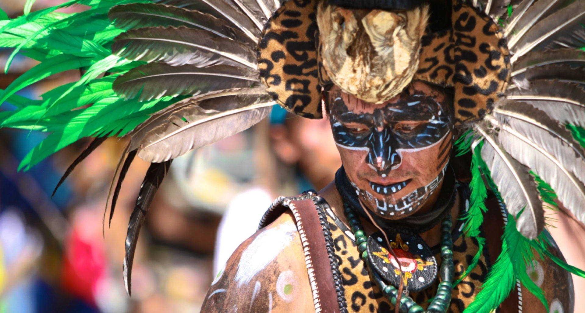
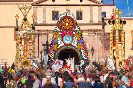
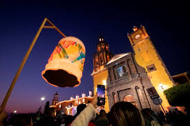

Las tradiciones son valiosas, es el corazon de la cultura de aqui, son lo que los hace unicos.
Ahora mostraremos el por que son tradiciones:
Danza de los Concheros

La danza de los concheros en Querétaro destaca por su rica fusión de elementos indígenas y católicos, reflejando la compleja historia cultural de la región. Los danzantes, ataviados con trajes coloridos y ornamentados que incluyen conchas, plumas y bordados elaborados, realizan movimientos rituales al son de conchas marinas y tambores. Este baile, que tiene sus raíces en la resistencia indígena durante la colonización española, incorpora elementos de la cosmovisión prehispánica, como la veneración a deidades indígenas, combinándolos con elementos cristianos introducidos por los misioneros. Además de su carácter ceremonial, la danza conchera en Querétaro se destaca por su participación en festividades religiosas locales, contribuyendo a la preservación y difusión de una tradición única que sigue vibrando en la actualidad.
En Querétaro, la danza de los concheros se convierte en un testimonio vivo de la identidad cultural de la región, proporcionando una expresión artística y espiritual que enlaza el pasado indígena con la realidad contemporánea. La interpretación única de los danzantes queretanos, así como la continua transmisión de la tradición de generación en generación, destacan la importancia de la danza conchera como un elemento fundamental en la preservación del patrimonio cultural mexicano. La foto que aquí se muestra fue tomada durante el Encuentro de las Culturas Populares y los Pueblos Indígenas en Querétaro, realizado en el Centro de las Artes de Querétaro (Ceart).
Fiesta de la santa cruz

En Querétaro, la Fiesta de la Santa Cruz se celebra en dos momentos: el 3 de mayo y del 12 al 15 de septiembre. La celebración del 3 de mayo se enfoca en la comunidad de trabajadores de la construcción, mientras que la fiesta del 12 al 15 de septiembre es una festividad religiosa con danzas y celebraciones en el Santuario de la Santa Cruz.
Procesión de los Farolitos

La Procesión de los Farolitos es una tradición que se celebra en San Juan del Río, Querétaro, el 11 de diciembre. Esta festividad, que tiene más de 70 años de historia, es una peregrinación que recorre las calles del centro histórico hasta llegar al Santuario de Nuestra Señora de Guadalupe. Durante la procesión, los participantes llevan faroles que iluminan el camino, creando una atmósfera mágica y emotiva.